Een selectie van afgewerkte projecten. Klik op een project om alle foto's te zien.
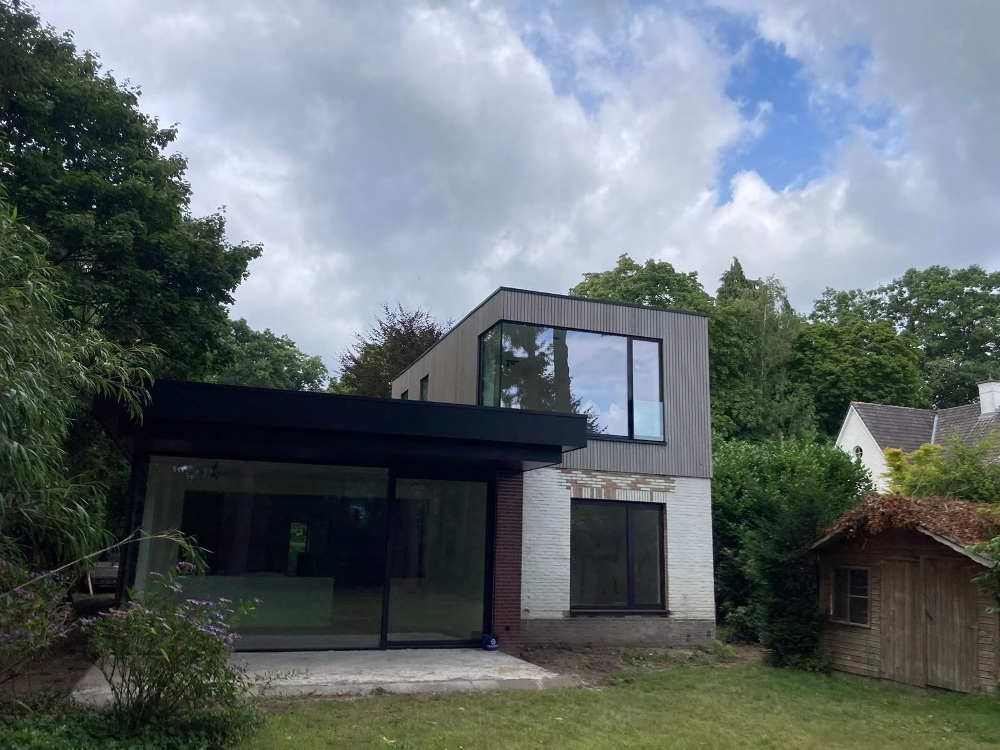
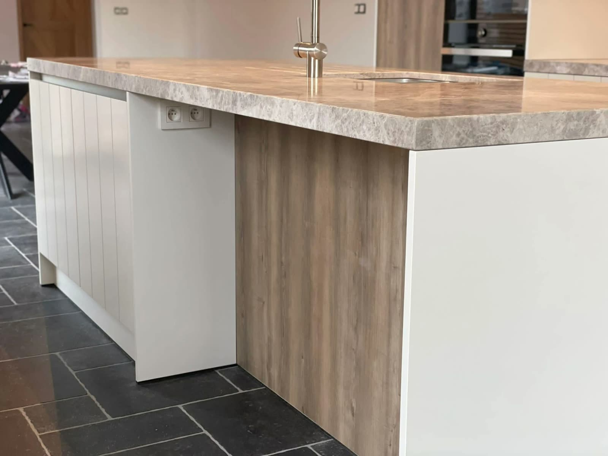
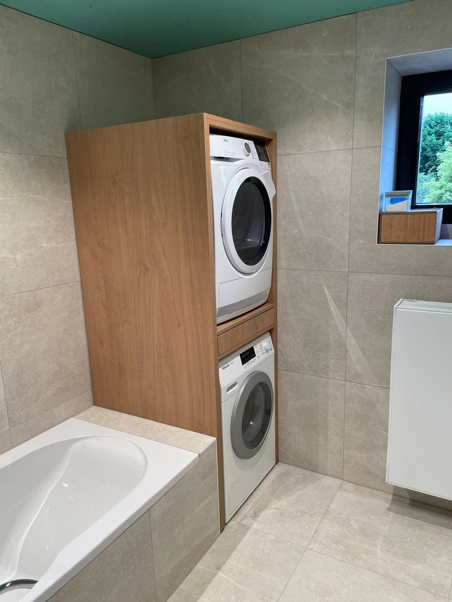
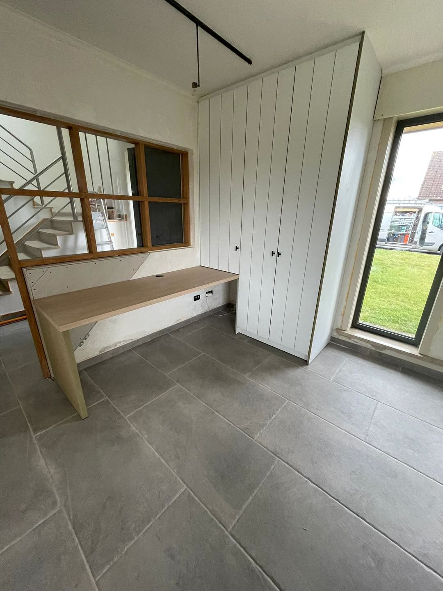
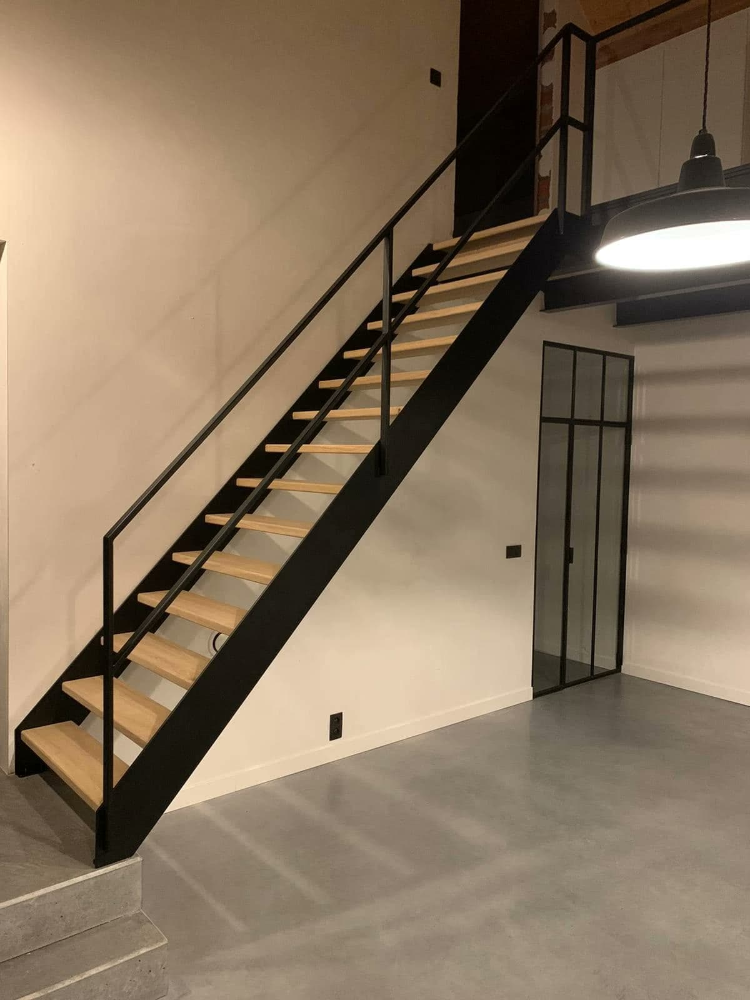
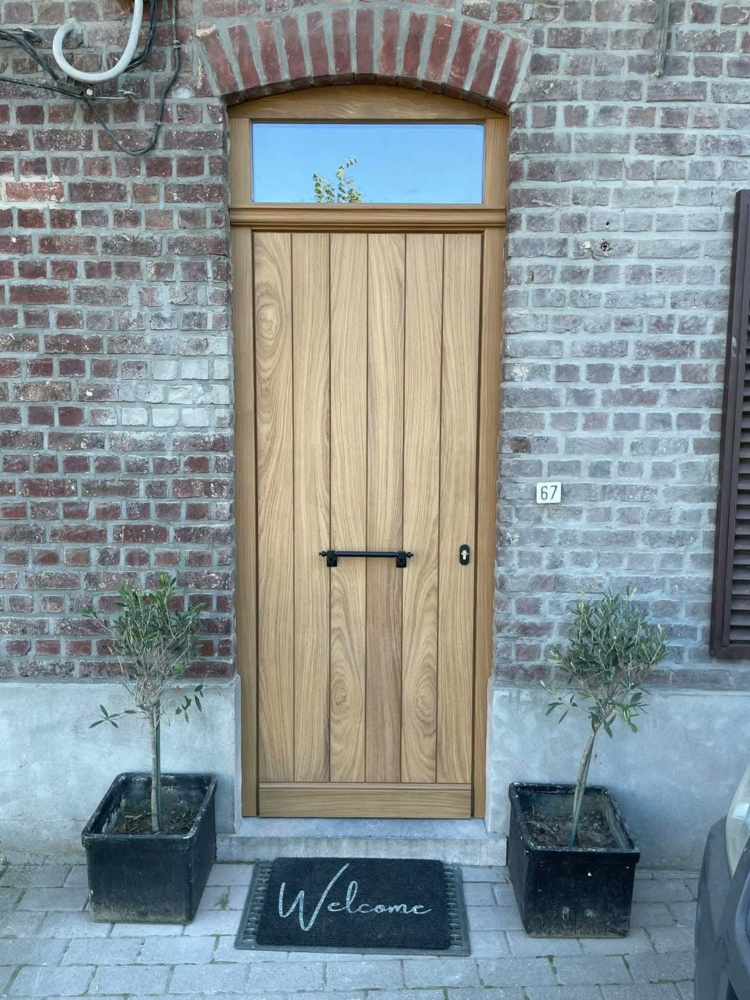
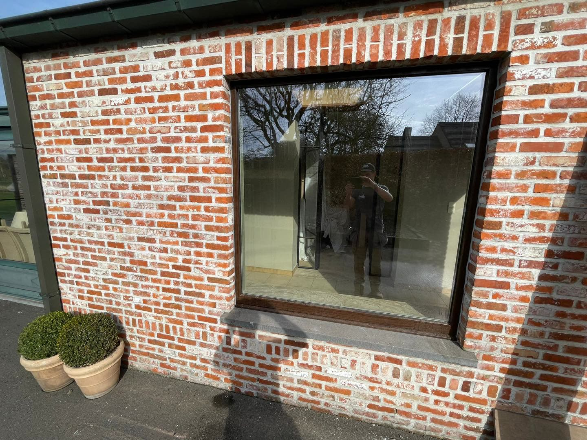
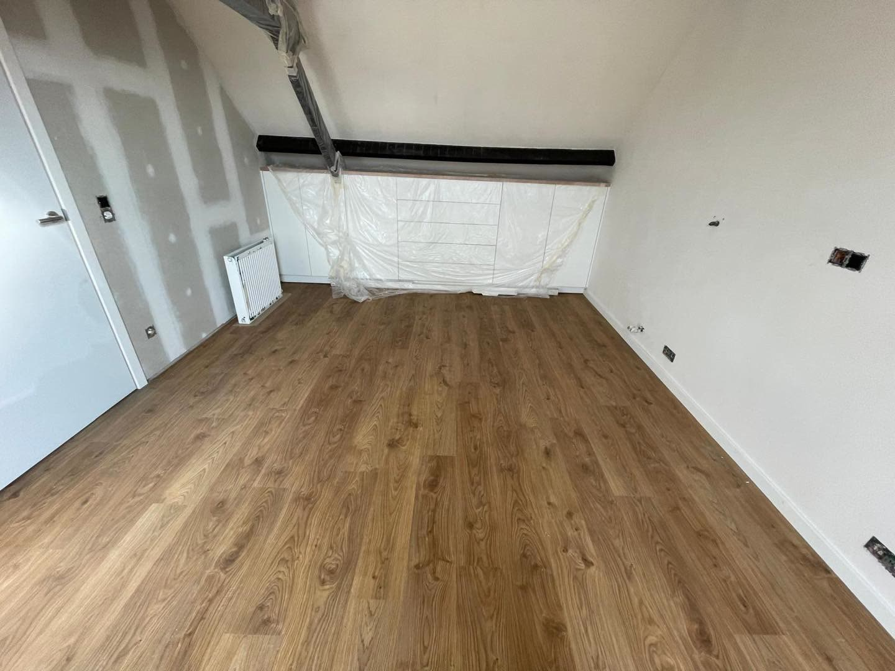
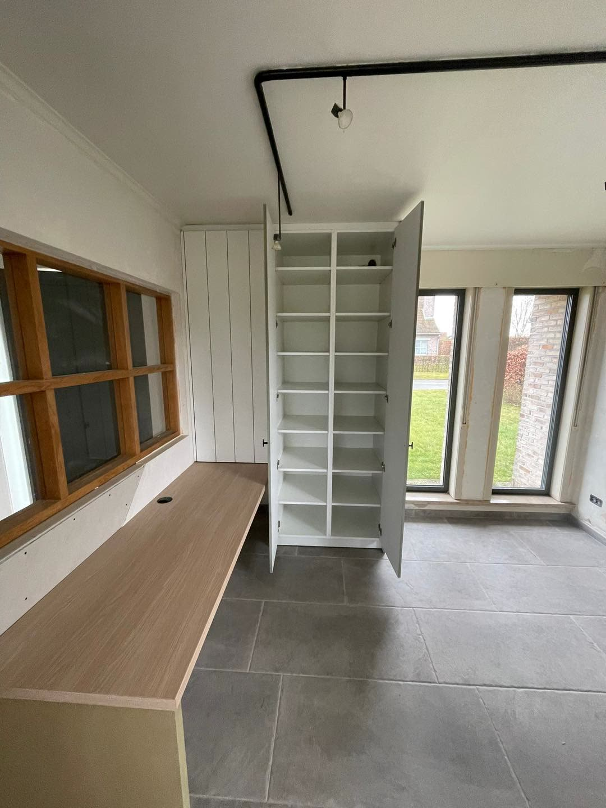
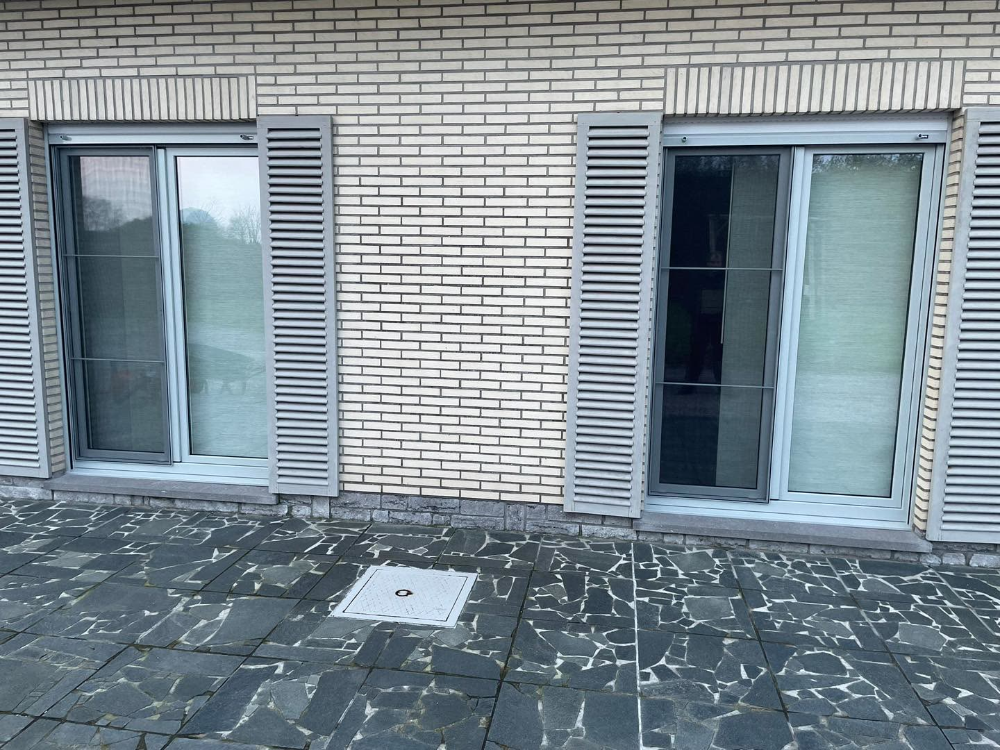
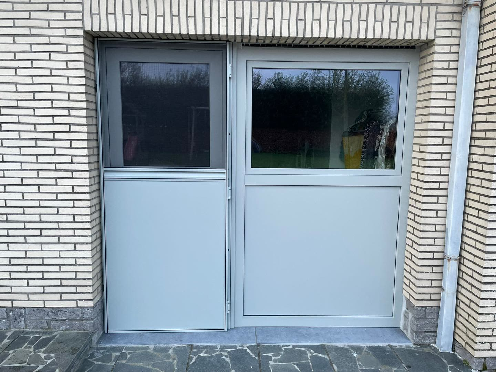
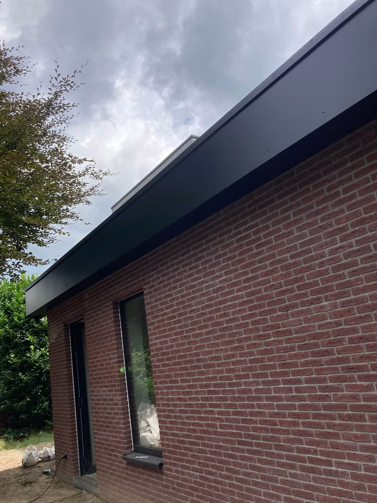
Alle foto's zijn echte realisaties van Jens. Meer werk ziet u op zijn Facebookpagina.
Vertel wat u in gedachten hebt. Jens komt vrijblijvend langs om op te meten en te bespreken.